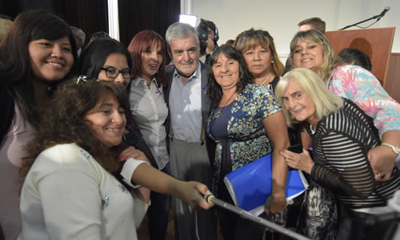

Real Chubut - Agencia de Noticias


Das Neves presidió el lanzamiento de la línea 137 para víctimas de la violencia de género
En el marco del Día Internacional de la Mujer
Será provincial, gratuita y funcionará las 24 horas. Para la puesta en marcha se firmó el convenio con los municipios de Puerto Madryn, Trelew, Gaiman, Puerto Pirámides, Las Plumas y Camarones.
El gobernador del Chubut, Mario Das Neves, encabezó este miércoles en el marco del Día Internacional de la Mujer el lanzamiento de la línea 137 de asistencia a las víctimas de violencia de género y la firma de convenios con seis municipios para su implementación.
Se trata de una línea provincial, totalmente gratuita, que funcionará las 24 y tendrá la central en la ciudad de Rawson. Brindará asistencia, acompañamiento y contención a las víctimas.
Además del equipo de profesionales, psicólogos, trabajadores sociales y abogados, en cada una de las localidades habrá un referente que asistirá a las víctimas de violencia familiar y de género.
Durante la ceremonia acompañaron al gobernador en el estrado principal, la ministro de la Familia, Leticia Huichaqueo; la subsecretaria de Modernización del Estado, María Victoria Das Neves; las diputadas Alejandra Johnson Táccari, Zulema Andén y Cristina De Luca; la representante del Ministerio de la Familia, Noelia Jecklen y referentes mujeres de distintas áreas del Gobierno.
GANAR ESPACIOS
Al hacer uso de la palabra durante el acto el gobernador expresó que "el 8 de marzo está en el calendario de cualquier actividad política desde hace muchos años porque es el Día Internacional de la Mujer, que tiene que ver con un acontecimiento muy triste del año 1857, donde un grupo de mujeres peleando por sus derechos llevaron adelante un enfrentamiento muy duro. Sin embargo no cedieron en su pelea y a los dos años tuvieron su primer sindicato".
"De ahí para acá hay cantidad de historias y de mujeres que han marcado hitos en la historia Argentina y en los últimos tiempos con todo lo que tiene que ver con la violencia de género, por la cantidad de femicidios, que originó todo un movimiento y una reacción positiva en lo colectivo en la comunidad", afirmó.
Das Neves indicó que "creo que la mujer ha ido ganado espacios, por mérito propio, más propio que los hombres porque siempre les ha costado más".
Recordó que "en mi primera gestión llegué a tener la ministro de Educación, Mirtha Romero, la de Salud, Graciela Di Perna, y la de Gobierno, que a su vez era jefe de la Policía, con 29 años Mariana Ripa" y agregó que "eran tres mujeres que manejaban algo así como el 85% del presupuesto. Fue una de las etapas que la gente recuerda muy bien, por eso es mérito de ellas tres y de todo el equipo que las acompañó".
El gobernador indicó que "pero esto de la participación de las mujeres lo vemos en todos lados recorriendo la provincia, en un hospital, en escuelas, centros comunitarios".
En ese marco valoró el rol de la mujer y afirmó que "algo que no dejo de recalcarlo y de admirar, es que hemos pasado crisis económicas muy duras y en demasiados casos el hombre se iba de la casa y la que se quedaba era la mujer con sus chicos, a veces sin trabajo, y tenía que salir a buscar la comida para sus hijos".

Por eso "cuando ingresamos a la anterior gestión comenzamos a normalizar algo que para nosotros es fundamental, que el titular de la vivienda en un matrimonio casado sea la mujer, porque si se va el hombre que se vaya. Pero que la mujer se quede en la casa con sus hijos y de ahí nadie la mueve".
Además de "todo lo que es la búsqueda de una salida laboral, porque la mujer no solamente puede ser una médica, enfermera o policía. Cuando comenzamos con la planta de adoquines de Trevelin tomamos más de 20 mujeres para iniciar las actividades e hicieron uno de los mejores adoquinados que tiene la provincia".
"Nosotros estamos permanentemente bregando para que la mujer no dependa de nadie solamente de su actitud hacia la vida, porque tiene que tener la tranquilidad de llegar a la casa, tener independencia y no condicionamientos de parte de nadie", afirmó el mandatario.
"Nadie les regaló nada, y nadie les va a regalar nada, porque tienen mérito propio, ya lo han demostrado, tuvimos presidentas mujeres, dirigentes".
Por último el gobernador expresó que "esperamos rápidamente bajar los niveles de agresión, psicológico, emocional, económico, hay de todo tipo, por eso cuenten con el Estado, todo esto que hacemos nosotros es para que de alguna manera sin meternos adentro de sus casas seamos custodios para que ustedes puedan vivir libres y felices como corresponde".
POLÍTICAS DE PREVENCIÓN Y DE PROMOCIÓN
La ministro de la Familia y Promoción Social, Leticia Huichaqueo, sostuvo que "nosotros hemos decidido desde que asumimos esta gestión tomar el día 8 de marzo como un día de reflexión, por eso desde la Dirección de Género y Equidad se ha hecho un trabajo fuerte en cada una de las comunas, con los municipios y con las organizaciones de base, nuestra directora ha llevado adelante alrededor de 42 capacitaciones y encuentros de los que han participado más de 2.400 mujeres en nuestra provincia".
"Eso nos permitió realizar este trabajo tan importante de diagnóstico en terreno, hablar con la mujer, empoderarla y en base a eso ir fijando políticas públicas del Ministerio", agregó.
"Nosotros hemos sido muy cuidadosos como equipo de trabajo porque respetamos a la mujer como tal, no la victimizamos, no la estigmatizamos, por eso es que siempre acompañamos estos espacios de encuentro como para acordar políticas con ellas", expresó.
Huichaqueo agradeció "la decisión política de cada uno de los intendentes y de los presidentes de comunas por acompañarnos con esta adhesión, porque va a servir para fortalecer el trabajo en terreno" y en ese marco recalcó que "existe una línea nacional, pero nuestro gobernador tomó la decisión de poder implementar esta línea 137, que va a ser atendida por distintos profesionales".
De esta manera "vamos a poder ordenar el circuito, estar a la altura de las circunstancias, estar en el momento que se necesita y sobre todo después a nosotros como Ministerio, nos va a permitir seguir fijando políticas de prevención y de promoción para no seguir estigmatizando y vulnerando a la mujer".
LÍNEA 137
La representante del Ministerio de la Familia, Noelia Jeckeln, agradeció al gobernador "por el apoyo y acompañamiento constante" e indicó que la implementación de la línea 137 "representa un trabajo en red que se viene realizando desde el año pasado".
Con respecto a la línea, sostuvo que tendrá "un centro que va a funcionar en la Dirección de Equidad y Género en Rawson, va a estar compuesto por profesionales. Allí se van a recepcionar las llamadas, y se brindará acompañamiento, asistencia y contención, además se va a evaluar la situación de riesgo".
Además habrá en cada localidad un "referente local, que va a intervenir en el lugar, a resguardar física y emocionalmente a la víctima y va a estar permanentemente conectado con el equipo técnico de Rawson" y será un "trabajo en equipo muy importante".
"La victima tiene que estar acompañada, asistida y contenida, esos son nuestros objetivos y para eso funcionará esta línea provincial 137 de manera gratuita y las 24 horas del día", concluyó.
CONVENIO
Firmaron el convenio los Ministerios de Coordinación de Gabinete, de Gobierno y de la Familia con los municipios de Camarones, Gaiman, Trelew, Las Pumas, Puerto Madryn, Puerto Pirámides, que se comprometieron a colaborar para la puesta en marcha de "equipos móviles" de la línea 137 para la atención de víctimas de la violencia de género.
PUBLICIDAD